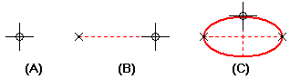

Draw an ellipse by defining 3 points

-
Choose the Ellipse By 3 Points command
 .
. -
Click where you want the primary axis to begin (A).
-
Click where you want the primary axis to end (B). This defines the length of the primary axis and the rotation angle.
-
Click a location on one side of the primary axis (C). This defines the secondary axis.
Tip:The primary axis can be shorter than the secondary axis.
-
Instead of clicking to define the primary and secondary axes of an ellipse, you can type values on the Ellipse command bar. You can also use a combination of graphic and command bar input.
-
IntelliSketch places relationship handles.
-
You can use the options on the command bar and the commands on the shortcut menu to edit an ellipse.
-
How do I
Draw an ellipse by center pointLook up more details
Ellipse By 3 Points commandEllipse By Center Point command
Ellipse command bar